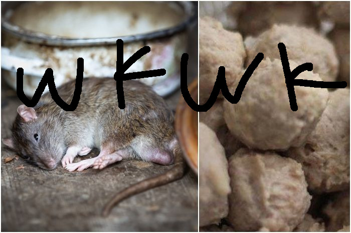

Bakso Recipe

Bahan :
- 500 gr daging tikus wkwk
- 100 gr es batu
- 100 gt tepung sagu
- 2 sdm bawang merah goreng
- 1/2 garam
cara buat :
- panaskan air untuk merebus kaldu tikus wkwk
- masukan semua bahan ke food prosesor
- selanjutnya cari sendiri di internet gua males ngetik
back to index